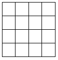

Trong một thành phố có n đường phố xếp hàng ngang và n đường phố xếp hàng dọc tạo thành hình bàn cờ như hình vẽ bên dưới (ví dụ với n = 5).

Tại mỗi giao lộ có một cột đèn đường. Trên mỗi đường phố có một công tắc có thể bật hoặc tắt tất cả các cột đèn thuộc đường phố đó. Như vậy mỗi cột đèn có thể được bật/tắt bởi hai công tắc, một thuộc đường ngang và một thuộc đường dọc. Hiện tại có một số cột đèn đang sáng. Bạn hãy tìm cách tắt tất cả các cột đèn trên sao cho số lần tắt công tắc là ít nhất.
Dữ liệu nhập:
- Dòng đầu tiên lưu số nguyên n (2 ≤ n ≤ 10).
- Trong n dòng tiếp theo mỗi dòng chứa n số 0 hay 1 đại diện cho trạng thái các cột đèn, 0 là cột đèn đang tắt, 1 là cột đèn đang bật.
Dữ liệu xuất:
- In ra số lần tắt công tắt ít nhất.
Tắt 3 công tắc ở dòng 3, cột 2 và cột 4.